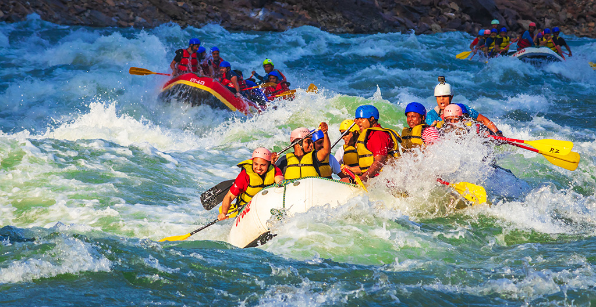

White Water Rafting
"We go rafting every 1-2 years and we ALWAYS go with All-Outdoors. A great family owned company, AMAZING food on the river, knowledgeable and fun guides, and an all around fantastic experience.
History
The sport of whitewater rafting was in its infant stages
in 1962. That spring George Armstrong placed a small raft
into the Stanislaus River near Yosemite National Park and
ventured into the unknown. He lived to tell about it and
fell in love with rivers and rafting.Soon he and his family
were sharing their new found love with others. A lot has been
learned since those early days of rafting, but the same joy and
excitement initially experienced on the river has only grown. And
so has the All-Outdoors family.Now, over 60 years later, three
generations of Armstrongs and the All-Outdoors staff welcome more
than 10,000 guests on river trips throughout California each year!.
Adventure Awaits You
Join us for unforgettable moments and stunning views.